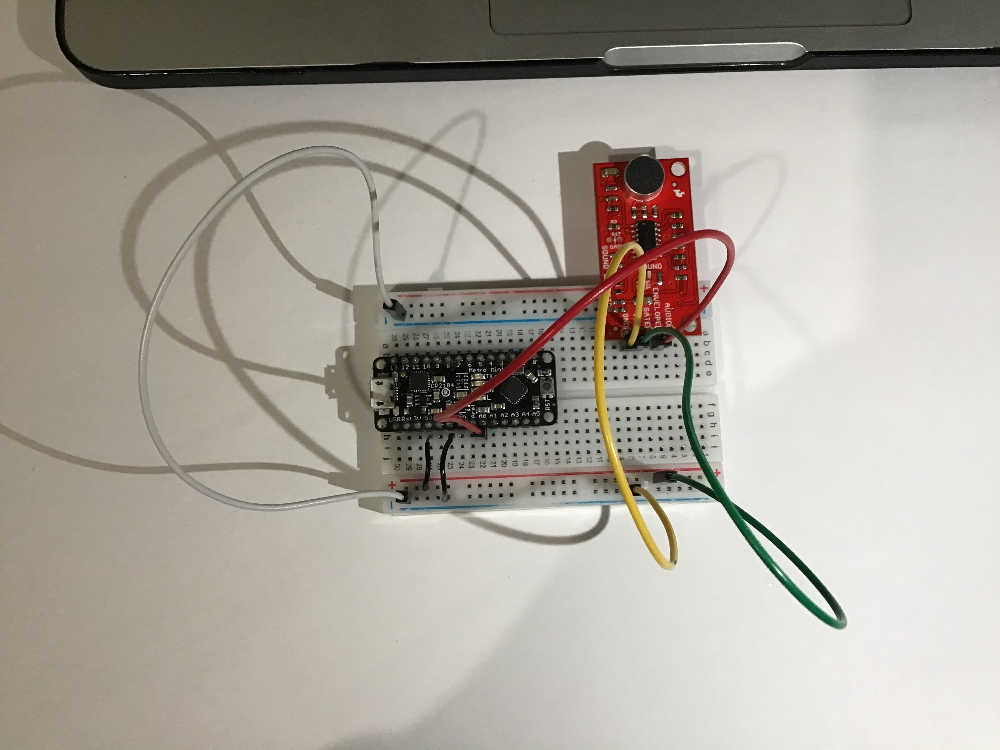
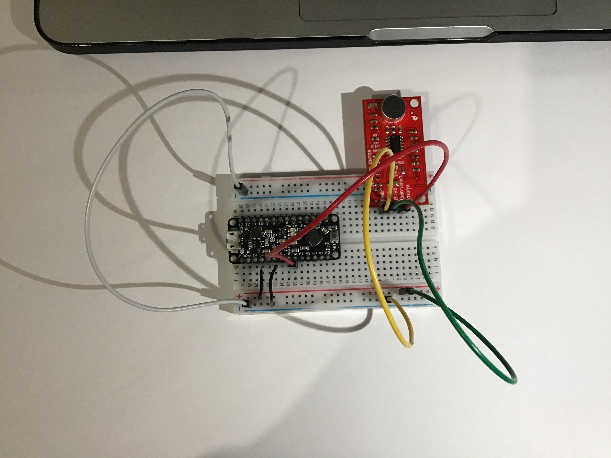
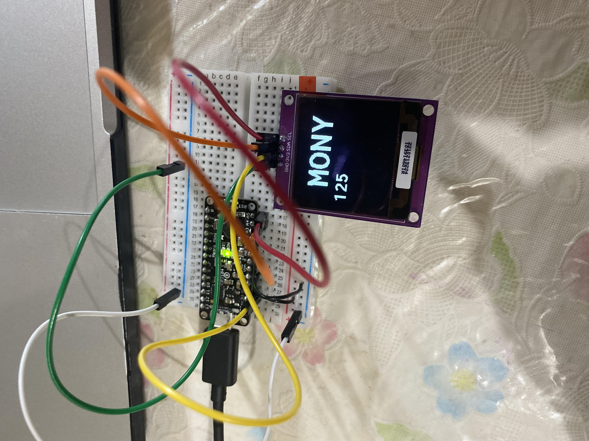
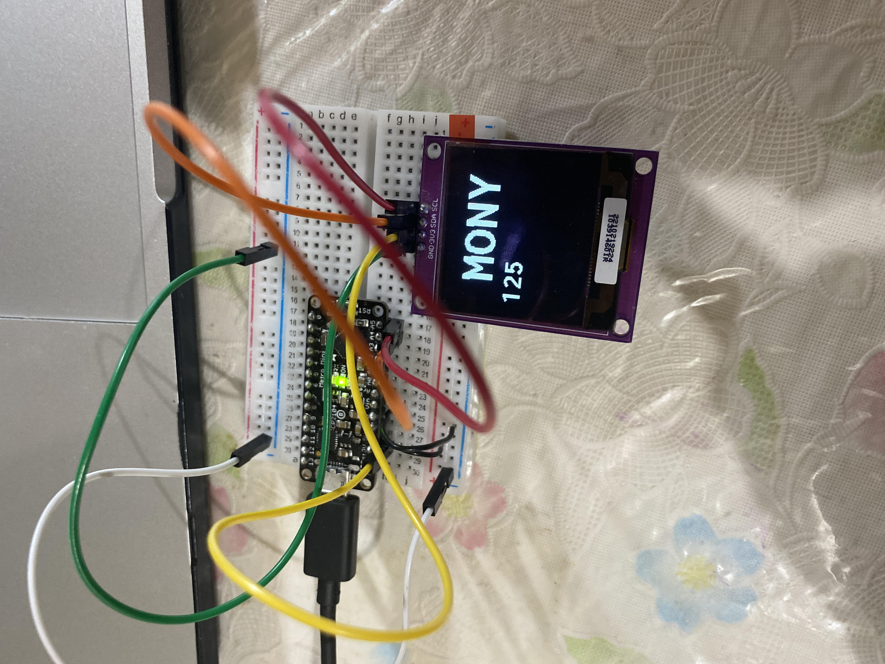

Monica Munoz[home ]
Prototype
Group:Captain Crunch
Members: Monica,Vanya,Jacob and Vanessa:
Vanya and I will work on a duplicate project(Hardware separate and software we might work on it together).
Jacob and Vanessa will also work with duplicates.
documentation [parts evaluation + initial concept]:
Shared google document for initial evaluation of different parts: [ here ]
My parts:
Serial based sensor:
$6.95 - okay for the price
4 pins - easy setup
documentation - 7/10 Theres documentation on the website as well as the link to the necessary arduino library
Serial based controller/actuator:
$19.99 - Price is a bit expensive
4 pins - easy setup
I am interested in being able to display imagery and or words in different colors
documentation - 7/10 There are some documentation on the website on how to setup
Analog output sensor:
SparkFun Sound Detector (with Headers)
$11.95 - a little pricy
I am interested in seeing if I could somehow switch the images and words with it
documentation - 7/10 website provides some help as well as youtube videos
hello world device examples:
1. SPARKFUN SOUND DETECTOR(WITH HEADERS)
instruction sheet for installation: [ here ]
PLEASE MAKE SCREEN VIDEO BIGGER TO SEE BETTER
THIS IS A SHORT DEMO ON HOW IT WORKS
ON SERIAL MONITOR, THE WORD QUIET,MODERATE OR LOUD ACTIVATE DEPENDING ON THE STRENGTH OF SOUND.
2.OLED DISPLAY
instruction sheet for installation: [ here ]
PLEASE MAKE SCREEN VIDEO BIGGER TO SEE BETTER
THIS IS A SHORT DEMO ON HOW IT WORKS
WORD RUNS ACROSS SCREEN- SPEED CAN BE CHANGED.
2.DISTANCE SENSOR
instruction sheet for installation: [ here ]
PLEASE MAKE SCREEN VIDEO BIGGER TO SEE BETTER
THIS IS A SHORT DEMO ON HOW IT WORKS
RAISED HAND ON SENSOR ACTIVATES "SOMETHING IS THERE"
 

 
